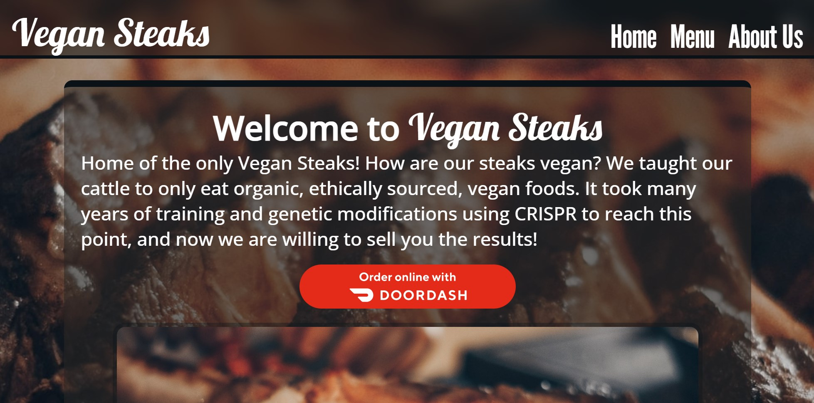
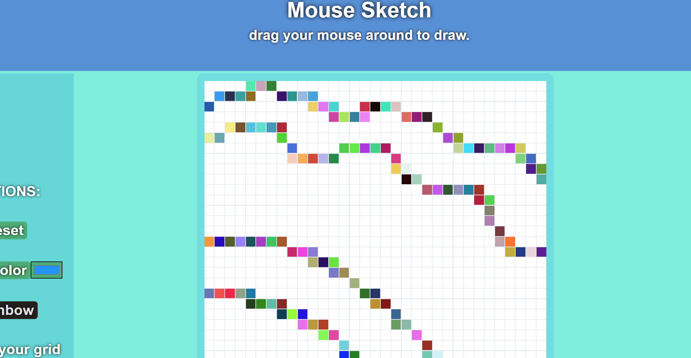

ABISHA THOMAS
Markdown Engineer
I write python and sometimes I pretend like I'm a full stack web developer. I have experience in IT and cyber security too.
∨ scroll down ∨
Projects

link to deployed site
Restaurant
Sample restaurant site and menu. All HTML is created using JS and DOM manipulation. Uses NPM and Webpack.
link to repo
link to deployed site

Reddit Visualizer
Queries the reddit API to get data for the top posts of the month for a given subreddit, then visualizes the data using plotly.
link to repo
link to deployed site

link to deployed site
Mouse Sketch
Simple drawing application using CSS Grid to generate hundreds of cells. Features a dynamic canvas resolution and the ability to draw with a rainbow.
link to repo
link to deployed site
Experience
Sacramento Kings
IT Specialist
collaborated with a team of technicians to support an arena of 320+ employees with tasks that ranged from imaging computers to educating end users. Worked various events with an attendance of 12,000+ people, solely supporting technology like the POS systems and wireless networks. Assisted with administrative tasks in Active Directory including resetting user passwords and updating user information.
US Air Force
Cyber Surety Specialist
Maintained the confidentiality, integrity, and availability of IT resources to ensure that secret and top-secret information was properly secured. Managed the administrators for the Kadena Air Base network. Responded to over 100 support tickets in a high concurrency environment.
My Skills
Education
Generation Full Stack
Participated in a 16 week Junior Full Stack Java Developer program spending over 460+ hours learning the technologies involved to create a full stack web application with Java using Spring Boot Framework, HTML5, CSS3, implementing basic unit tests and deploying the application to Heroku. Gained experience with problem solving, collaboration, and communication.